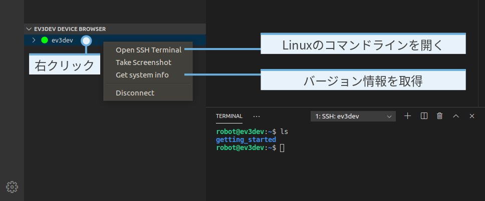

EV3の高度な機能を使う¶
MicroPythonは、Linuxの一種であるev3dev上で動作します。 Linuxはオペレーティングシステムです。(他によく知られたオペレーティング システムにはMicrosoft WindowsやApple macOSがあります。)つまり、EV3は ずっと小さいだけで、ほとんど本物のコンピューターのようなものです。
Note
MicroPythonプログラムを書くだけなら、以降のセクションは 読み飛ばしても構いません。
以降のセクションは、MicroPythonを超えて、Linuxやev3devに組み込まれた 他の機能に触れてみたい好奇心旺盛なユーザー向けです。
Linuxコマンドライン¶
EV3 Brickは本物のコンピューターにかなり近いものですが、大きな画面と マウスで操作するわけではありません。代わりにコマンドラインを使って ファイルやプログラムにアクセスします。ターミナルとも呼ばれます。
図16の手順に従ってコマンドラインに アクセスします。これでコマンドを入力してEnterを押すことで実行できます。

図16 Linuxコマンドラインを開いてlsコマンドを実行する。
基本的なコマンドを実行する
たとえば、次のコマンドを入力してEnterを押すと:
ls
現在のフォルダーの内容が表示されます。図16が
その結果です。さきほど実行したgetting_startedプロジェクトの
フォルダーが一覧に表示されています。
次のコマンドを入力してEnterを押すと:
exit
コマンドラインが閉じます。または、 図16に示したゴミ箱アイコンをクリックします。
コマンドラインのテキストは、選択してから
ctrl shift cを押すとコピーできます。
ctrl shift vで
コマンドラインにテキストを貼り付けられます。
管理者としてコマンドを実行する
一部のコマンドは実行にパスワードが必要です。新しいアプリをインストールするなど、
コンピューターやタブレットでの管理作業と似ています。これらのコマンドは
通常のコマンドと同じように動作しますが、前に
sudoを付けます。
練習として、次のコマンドを実行してEV3 Brickの電源を切ることができます。
sudo poweroff
パスワードを求められます。makerと入力してEnterを押します。
Warning
自分が何をしているかわかっている場合にのみ、sudoを使ってコマンドを実行してください。
コマンドラインについてさらに学ぶ
コマンドラインと利用できる多くのコマンドについてさらに学ぶには、 初心者にもやさしい無料の電子書籍 The Linux Command Lineを読むことをおすすめします。
ev3dev固有のヒントやコツについては、ev3devの Webサイトを参照してください。
EV3 Brickの名前を変更する¶
Visual Studio CodeでEV3を検索すると、すべてのEV3 Brickが 名前の一覧で表示されます。デフォルトではすべてのEV3 Brickがev3devという 名前です。以下の手順でその名前を変更できます。
Visual Studio Codeを開き、いつもどおりEV3に接続します。
上記の管理者としてコマンドを実行する手順を読みます。
よい名前を考えます。この例では
autonomous-vehicle2と名付けます。次のコマンドを入力してEnterを押します。
sudo hostnamectl set-hostname autonomous-vehicle2変更を反映するためにEV3 Brickを再起動します。
コンピューターも再起動が必要な場合があります。
EV3 Brickの名前に使えるのは、小文字のaからz、
数字の0から9、ハイフンの-のみです。先頭は文字または
数字にする必要があります。スペースやその他の記号は使えません。